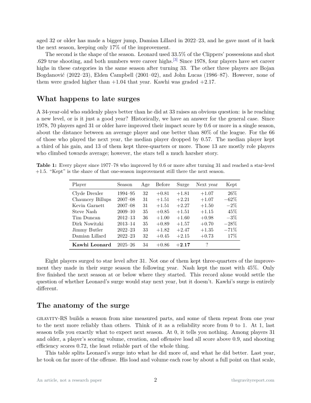
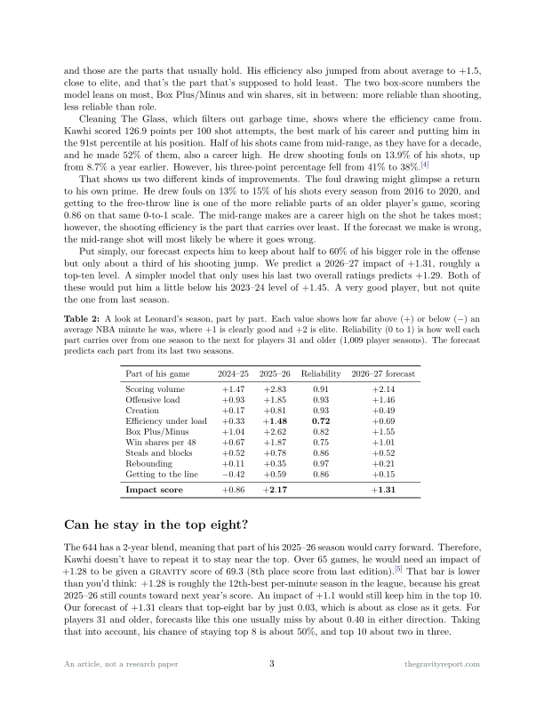

Article №4 · Preseason 2026–27
The Kawhi Anomaly
The biggest rebound ever recorded by a 34-year-old.
Not a research paper. This is an article, typeset in LaTeX: independent analysis, not peer reviewed.
v1 — methodology and figures verified against public sources as of October 6, 2026. This article will be revised.
v1 — methodology and figures verified against public sources as of October 6, 2026. This article will be revised.
Abstract.
In the 2024–25 season, Kawhi Leonard played 37 games and was graded as a good starter. In the 2025–26
season, at 34 years old, he played 65 games and was graded as the 5th best player in the league per
minute. His jump in impact score (+1.31) is the biggest one-year gain ever recorded by a player 34 or
older, and he is the only star since 1978 to set career highs in usage and true shooting in the same
season after 33. Late surges have an unkind history. Only eight players have surged to star level after
31. None of them kept ¾ of that gain, and the median kept almost none of it. Leonard's surge came in two
parts, taking on a heavier role and hotter shooting. Both of those parts age differently historically.
When we rebuild his season piece by piece, we predict an impact of +1.31 next season, roughly a top-ten
level, which means he keeps about a third of his surge.
What's in the article
- The scale, in plain terms: an impact score measures how much a player helps per minute compared with an average NBA minute. Zero is average; +0.6 beat 80% of rotation players last season, +1.3 was roughly a top-ten player, and only five players reached +2.0.
- Two records: the biggest one-year jump ever by a player 34 or older (+0.86 to +2.17), and the only star since 1978 to set career highs in usage and true shooting in the same season after 33.
- What happens to late surges: eight players surged to star level after 31. None kept three-quarters of the improvement the next season; Steve Nash kept the most, 45%.
- The anatomy: his bigger role is the kind of change that usually lasts. His hot shooting, a career-high 52% from mid-range per Cleaning the Glass, is the kind that usually fades.


The forecast
Kawhi Leonard ranks top 8 in The 644, July 2027 edition.
#1–8 = Win · #9 or below = Miss. Our own ranking; we keep one bet on it each article so the model gets graded too.
Kawhi Leonard finishes 2026–27 top 8 in Box Plus/Minus among players with 1,500 regular-season minutes.
Basketball Reference, final regular-season table.
Kawhi Leonard uses 30% or more of Toronto's possessions in 2026–27.
The part of his surge we expect to hold. Void under 1,000 minutes.
Kawhi Leonard's true shooting falls below .610 in 2026–27.
The part we expect to fade. He shot .629 last season. Void under 1,000 minutes.
The thin line marks 50%, a coin flip. Public-stat bets are graded on Basketball Reference by April 30, 2027. Registered October 6, 2026; scored by Brier score in the Forecast Ledger.
Cite this article
Freedman, F. (2026). "The Kawhi Anomaly: The Biggest Rebound Ever Recorded by a 34-Year-Old." The Gravity Report, GRAVITY Article No. 4, v1. https://thegravityreport.com/notes/kawhi/